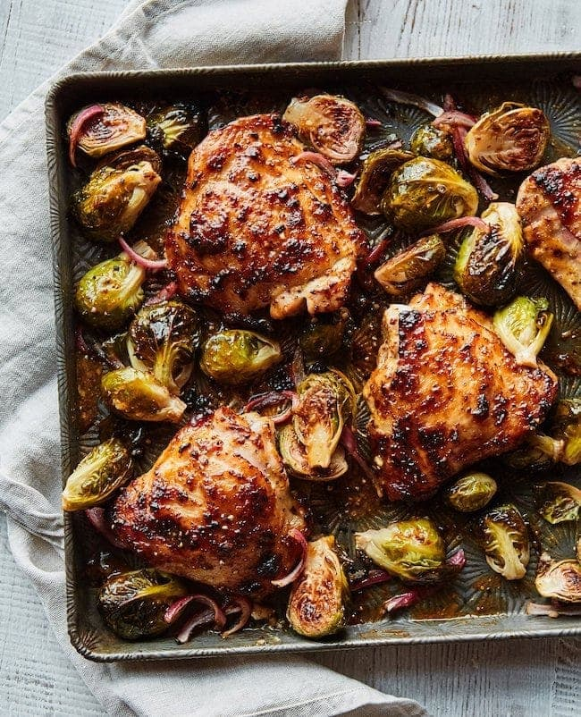

Honey Mustard Chicken with Brussels Sprouts

Description
A favorite meal at my house.
Credit to Two Peas and Their
Pod
for the recipe.
Ingredients
- Nonstick cooking spray
- 1/4 cup plus 2 tablespoons olive oil
- 2 tablespoons fresh lemon juice
- 1 tablespoon Dijon mustard
- 1 tablespoon whole-grain mustard
- 1 tablespoon honey
- 3 garlic cloves, minced
- Kosher salt and freshly ground black pepper
- 2 pounds bone-in skin-on chicken thighs (4 medium thighs)
- 1 1/2 pounds Brussels sprouts, halved
- 1/4 large red onion, sliced
Directions
-
Preheat the oven to 425°F. Grease a large baking sheet with nonstick cooking spray and set aside. For easy
clean up, you can line the pan with foil.
-
In a medium bowl, whisk together the 1⁄4 cup olive oil, 1 tablespoon of the lemon juice, the Dijon mustard,
whole-grain mustard, honey, and garlic. Season with salt and pepper to taste.
-
Use tongs to dip the chicken thighs in the sauce, coating both sides. Place the thighs on the prepared
baking sheet. Discard any remaining sauce.
-
In a medium bowl, combine the Brussels sprouts and red onion. Drizzle with the remaining 2 tablespoons olive
oil and 1 tablespoon lemon juice and toss until well coated. Arrange the sprouts and onion around the
chicken on the baking sheet, making sure they aren’t overlapping. Season with salt and pepper.
-
Roast for 30 to 35 minutes, until the chicken is golden brown and has an internal temperature of 165°F and
the Brussels sprouts are crispy. Serve hot.